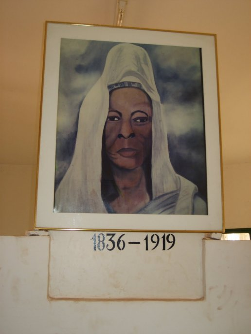

HAUTS-BASSINS


Parmi les sites touristiques de la belle cité de Sya se compte le mausolée Guimbi Ouattara, l’un des monuments culturels qui permet à la population de se rappeler de cette grande amazone de l’empire du Guiriko. Les stagiaires assistants de l’ISTIC en fin de formation se sont rendus ce samedi 10 juillet sur ledit site. Cette visite a permis aux étudiants d’en savoir davantage sur la vie de cette figure emblématique.
Connue comme étant une amazone et une médiatrice de l’empire du Guiriko, la princesse Guimbi Ouattara n’a eu aucun enfant biologique. Déjà mariée à l’âge de 15 ans à Mori Fimba Ouattara, la princesse Guimbi Ouattara s’est remariée à Drissa Touré après la mort de son premier mari.
Malgré les multiples qualités qu’elle avait, l’enfantement n’était pas rendez-vous. Ce qui ne l’a pas empêchée d’avoir des enfants sous sa garde, car dans l’organisation de la société Dioula, l’adoption est une réalité socio-culturelle. « La princesse Guimbi Ouattara n’a pas eu un enfant biologique mais elle a eu des enfants adoptifs à telle enseigne qu’on ne pouvait pas venir ici et se rendre compte qu’elle n’avait pas d’enfant», a laissé entendre le guide touristique Drissa Ouattara.
Le don de la maternité
Guimbi Ouattara avait particulièrement un don qui lui permettait de faciliter les accouchements difficiles. Ce don lui venait de sa génitrice Alima Ouattara. Selon le guide, la princesse appliquait un produit sur une meule et une fois que la femme enceinte consomme ce produit, elle accouche facilement.
La princesse GUIMBI Ouattara était aussi une médiatrice aguerrie. Elle a conduit la médiation qui a permis d’épargner l’empire Guiriko des griffes de Samory Touré. Sa notoriété lui a valu d’accueillir plusieurs personnes notamment l’explorateur Binger. Ce dernier a séjourné durant sept(7) jours à Bobo avant de reprendre sa route.
Elle ne mènera pas une véritable vie de foyer du fait de la disparition de ses différents époux.
Elle eut à recevoir BINGER chez elle./p>
Le Mausolée de la princesse Guimbi OUATTARA est situé à environ 150 m de la rue Vicens à parir de l’Agence BIB Koko, au secteur 3.
Il se situe dans le quartier Konbougou de Bobo-Dioulasso. Son accès est facile.
C’est la tombe de Guimbi OUATTARA (1836 – 1919), princesse qui a participé à la défense de Sya contre les conquérants.
Guimbi OUATTARA a eu à héberger Binger, en 1888, lors de son passage à Bobo-Dioulasso.
Elle conserva à vie une grande balafre sur le front. A Bobo-Dioulasso, elle jouissait d’une grande considération.
Elle possédait des esclaves et entretenait quelques guerriers en armes dont elle louait les services, ce qui lui procurait de confortables revenus.
Elle habitait un groupe de maisons dans la partie dioula du village sur la rive droite du ruisseau. Femme au grand cœur, elle accueillit et protégea les explorateurs européens de passage à Bobo-Dioulasso, s’opposant parfois à ses compatriotes.
BINGER fut le premier blanc qu’elle rencontra en 1888.
Lors de sa grande exploration, il arriva malade et à bout de forces à Bobo-Dioulasso. Alors qu’il régnait une forte tension,
Guimbi s’avança vers lui et se tournant vers la population, dit : « Je sais, ce blanc n’est pas un ennemi, je le garantis, j’en ai entendu parler à trois jours de marche d’ici.
Il est de nos amis, d’ailleurs, je le prends sous ma protection. » Binger put entrer dans la ville sans être inquiété, mais il s’en fallu de peu.
Elle lui prodigua tous ses soins pendant plusieurs jours et le remit sur pied.